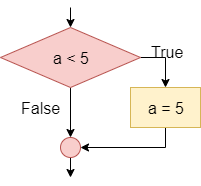
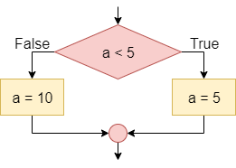

The conditional statement, also known as the If-Then statement, is used to control the program’s flow by checking the value of a Boolean statement and determining if a block of code should be executed based on that value. This is the simplest conditional instruction. If the condition is true, the block enclosed within the statement is executed. If it is false, then the code in the block is skipped.
A more advanced conditional statement, the If-Then-Else or If-Else statement, includes two blocks. The first block will be executed if the Boolean statement is true. If the Boolean statement is false, then the second block of code will be executed instead.
Simple conditions are obtained by means of the relational operators, such as <, >, and ==, which allow you to compare two elements, such as two numbers, or a variable and a number, or two variables. Compound conditions are obtained by composing two or more simple conditions through the logical operators and, or, and not.
Boolean Logic Review
Recall that the Boolean logic operators and, or, and not can be used to construct more complex Boolean logic statements.
Or
For example, consider the statement x <= 5. This could be broken down into two statements, combined by the or operation: x < 5 or x == 5. The table below, called a truth table, gives the result of the or operation based on the values of the two operands:
| Operand 1 | Operand 2 | Operand 1 or Operand 2 |
|---|---|---|
| False | False | False |
| False | True | True |
| True | False | True |
| True | True | True |
As shown above, the result of the or operation is True if at least one of the operands is True.
And
Likewise, to express the mathematical condition 3 < a < 5 we can use the logical operator and by dividing the mathematical condition into two logical conditions: a > 3 and a < 5. The table below gives the result of the and operation based on the values of the two operands:
| Operand 1 | Operand 2 | Operand 1 or Operand 2 |
|---|---|---|
| False | False | False |
| False | True | False |
| True | False | False |
| True | True | True |
As shown above, the result of the and operation is True if both of the operands are True.
Not
Finally, the not logical operator is used to reverse, or invert, the value of a Boolean statement. For example, we can express the logical statement x < 3 as not (x >= 3), using the not operator to invert the value of the statement. The table below gives the result of the not operation based on the value of its operand:
| Operand | not Operand |
|---|---|
| False | True |
| True | False |
In propositional logic, the completeness theorem shows that all other logical operators can be obtained by appropriately combining the and, or and not operators. So, by just understanding these three operators, we can construct any other Boolean logic statement.
Conditionals in Flowcharts & Pseudocode
The table below lists the flowchart blocks used to represent conditional statements, as well as the corresponding pseudocode:
| Operation | Flowchart | Pseudocode |
|---|---|---|
| If-Then |  | |
| If-Then-Else |  | |
Conditionals in Practice
The mechanism for determining which block an If-Then-Else statement executes is the following:
- If the initial condition is true, execute the instructions enclosed between if and else
- If the initial condition is false, execute the instructions between the else and the end of the block
To understand how a conditional statement works, let’s look at this example of a simple If-Then-Else statement. Consider the following flowchart:

In this case, if a is less than zero, the output message will be “The value of a is less than zero”. Otherwise, if a is not less than zero (that is, if a is greater than or equal to zero), the output message will be “The value of a is greater than or equal to zero”.
Nesting
We can also nest conditional statements together, making more complex programs.
Consider the following flowchart:
In this case, if a is less than zero the output message will be “The value of a is less than zero”. Otherwise (that is, if a is not less than zero so if a is greater than or equal to zero) the block checks whether a is equal to zero; if so, the output message will be “The value of a is equal to zero”. Otherwise (that is, if the first condition is false, i.e. a >= 0 and the second condition is false, i.e. is nonzero; the two conditions must be both true as if they were bound by a logical and, and they are the same as the condition a > 0) the output message will be “The value of a is greater than zero”.
Conditionals in Python
To see how conditional statements look in Python, let’s recreate them from the flowcharts shown above.
As we can see in the examples above, we must carefully indent each block of code to help set it apart from the other parts of the program. In addition, each line containing if, elif and else must end in a colon :.